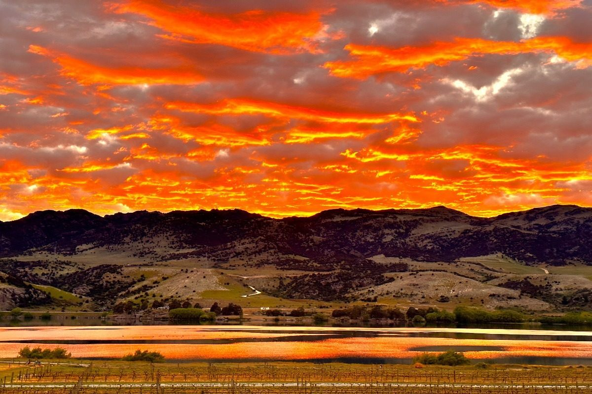

Cromwell sits at the junction of the Clutha and Kawarau rivers in the heart of Central Otago, one of New Zealand's most distinctive regions. Known for its world-class Pinot Noir, dramatic landscapes, and long golden summers, Cromwell is far more than a stopover between Queenstown and Wanaka. Whether you are spending a weekend or a full week, there is no shortage of things to do in Cromwell NZ. Here is our local guide to getting the most out of your visit.
Lake Dunstan is the centrepiece of Cromwell's outdoor scene. Created by the Clyde Dam in the 1990s, this expansive lake stretches from Cromwell to Clyde, offering crystal-clear water that warms up beautifully during the long Central Otago summers. Lake Dunstan activities are among the most popular things to do in Cromwell, and for good reason.
Swimming
Clear, calm water ideal for families. Multiple beach access points around Cromwell.
Kayaking
Explore hidden inlets and rocky coves. Rental available in Cromwell town.
Paddleboarding
Calm morning conditions are perfect for SUP. Beginners welcome.
Fishing
Brown and rainbow trout, plus landlocked salmon. A renowned fishery.
For guests staying at our Lakeside Cottage, you have direct access to Lake Dunstan right from the property. Walk down from the cottage to the water's edge for a morning swim or an evening paddle as the sun sets behind the mountains. It is one of the reasons the cottage is so popular with families who want to make the lake part of their everyday holiday experience.
Jet boating is also available on Lake Dunstan and the nearby Kawarau River for those looking for something with a bit more adrenaline. Several operators run tours departing from Cromwell during the summer months.
Central Otago is a cycling paradise, and Cromwell is right at the heart of it. The region's dry climate, flat terrain along the old rail corridors, and stunning scenery make it one of the best cycling destinations in New Zealand.
Otago Rail Trail
New Zealand's original Great Ride, the Otago Rail Trail follows the route of the old Otago Central Railway for 152 kilometres between Middlemarch and Clyde. The trail passes just 300 metres from Lakeside Retreat, making us one of the closest accommodations to the trail in the Cromwell area. You can step out the door and be riding within minutes.
The Cromwell to Clyde section is one of the most accessible and scenic portions, running approximately 15 kilometres through relatively flat terrain with views across the lake and surrounding mountains. It is suitable for all fitness levels and can be completed comfortably in a couple of hours. Bike hire and luggage transfer services are available from operators in Cromwell.
Lake Dunstan Cycle Trail
A newer addition to the region's cycling network, the Lake Dunstan Cycle Trail runs 55 kilometres from Cromwell to Clyde along the lake edge. It features hand-carved tunnels through rock, dramatic cliff-edge sections, suspension bridges, and constantly changing lake views. It is widely regarded as one of the most spectacular cycle trails in the country. The full trail takes most riders four to six hours, but you can easily ride shorter sections if you prefer.
Bannockburn Sluicings Walk
For those who prefer walking, the Bannockburn Sluicings offer a fascinating glimpse into Central Otago's gold mining past. This short loop walk (approximately one hour) takes you through dramatic sculpted clay cliffs created by gold sluicing in the 1860s. The otherworldly landscape is unlike anything else in New Zealand and is only a ten-minute drive from Lakeside Retreat.
Central Otago is the world's southernmost wine-growing region and has earned a global reputation for producing exceptional Pinot Noir. With over 30 wineries within a short drive of Cromwell, wine tasting is one of the must-do Cromwell attractions for visitors.
The Bannockburn sub-region, just minutes from Lakeside Retreat, is home to some of the most celebrated names in Central Otago wine, including Mt Difficulty, Carrick Winery, and Felton Road. Most cellar doors welcome visitors for tastings, and several have excellent on-site restaurants where you can enjoy a long lunch with vineyard views. For a detailed guide to the best wineries and a suggested tasting route, see our Central Otago Wine Trail guide.
Beyond wine, Cromwell has a growing food scene. The weekly Cromwell Farmers Market is held every Sunday morning and features seasonal produce, artisan bread, cheeses, and local specialties. Cromwell town centre has several excellent cafes and restaurants, and the Heritage Precinct (described below) is home to charming eateries in restored heritage buildings.
Local Tip
Visit the Cromwell Farmers Market on Sunday morning, then head to Bannockburn for a late morning wine tasting and winery lunch. It is the perfect Central Otago day out and everything is within 15 minutes of Lakeside Retreat.
When the Clyde Dam was built in the 1990s, the rising waters of Lake Dunstan submerged parts of old Cromwell. Before this happened, a number of historic buildings from the gold rush era were carefully dismantled and rebuilt on higher ground, creating what is now the Cromwell Heritage Precinct.
This charming collection of restored 19th-century buildings sits on the shores of the lake and includes craft shops, galleries, a bookshop, and several cafes. It is a lovely place to spend an hour or two browsing, particularly on a sunny afternoon. The precinct captures the character of old Central Otago and gives visitors a sense of the region's gold mining and pioneering history.
The Heritage Precinct is located in central Cromwell, about ten minutes' drive from Lakeside Retreat. Parking is free and easily available. Combine a visit with a walk along the lakefront to make an enjoyable half-day outing.
Cromwell Through the Seasons
One of the best things about Cromwell Central Otago is how dramatically the landscape and activities change with each season. Central Otago experiences some of the most extreme temperature variations in New Zealand, from hot, dry summers to crisp, cold winters, and each season brings its own character.
Summer
- Lake swimming and water sports
- Long evening cycle rides
- Outdoor winery dining
- Stone fruit season at orchards
- Daylight until after 9:30pm
Autumn
- Spectacular golden vineyard colours
- Wine harvest and vintage events
- Quieter trails and fewer visitors
- Mild cycling weather
- Autumn produce at farmers market
Winter
- Nearby ski fields (Cardrona, Treble Cone ~1.5hr)
- Cosy cellar door tastings
- Dramatic frost and snow landscapes
- Ice skating on frozen ponds
- Stargazing in the longest nights
Spring
- Blossom festival celebrations
- Lambing season on local farms
- Warming trails, wildflowers
- Shoulder season pricing
- Gardens coming to life
Day Trips from Cromwell
Cromwell's central location in the Otago region makes it an ideal base for exploring. You can easily visit several major South Island destinations as day trips without needing to pack up and relocate your accommodation.
Queenstown
Adventure capital of NZ. Bungy, jet boats, gondola, shopping, and dining. Scenic drive through Kawarau Gorge.
Wanaka
Relaxed lakeside town. Puzzling World, That Wanaka Tree, Roy's Peak, and excellent cafes and galleries.
Arrowtown
Historic gold rush village with charming main street, boutique shopping, great cafes, and the Chinese Settlement.
Alexandra
Gateway to the Otago Rail Trail. Visit the Central Stories museum, riverside walks, and the famous clock on the hill.
Local Tip
Spend one day doing Queenstown's big-ticket activities and another exploring the quieter charms of Wanaka and Arrowtown. With Lakeside Retreat as your base, you avoid the hassle and cost of accommodation in both tourist centres and return to a peaceful lakeside setting each evening.
Where to Stay in Cromwell
Lakeside Retreat offers three unique accommodations on the shores of Lake Dunstan, each suited to a different kind of visit. Whether you are a couple looking for a romantic escape, a family after a lakeside holiday, or travelling with your dog, we have the right fit.

Dome Pinot
Our premium geodesic dome with private outdoor spa, panoramic skylight for stargazing, and vineyard views. Perfect for romantic getaways.

Dome Rosé
A beautifully appointed geodesic dome featuring a private spa and mountain views. Intimate, serene, and ideal for reconnecting.

Lakeside Cottage
A charming cottage right on Lake Dunstan. Sleeps up to 3, full kitchen, pet-friendly, and direct access to the water.
For families: The Lakeside Cottage is the clear choice. Direct lake access means the kids can swim and play all day, and the pet-friendly policy means your dog can come along too. With a full kitchen and space for up to six, it is a genuine home away from home.
For couples: Choose between Dome Pinot and Dome Rosé, our two adults-only geodesic domes. Both feature private outdoor spas, panoramic skylights for stargazing from bed, and complete privacy. Spend your days exploring wineries and trails, and your evenings soaking under the stars.
Book Your Cromwell Adventure
Make Lakeside Retreat your base for exploring everything Cromwell and Central Otago have to offer.
View Accommodation & Book